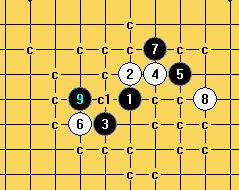

[互动棋谱]急性子的我：斜一9之必胜
#1 [互动棋谱]急性子的我：斜一9之必胜作者：wd1988 发表时间：2009-4-6 19:34:24
看到小棋后焦头烂额实在是忍不住，等别人（冷面孤煞）来发谱不是我的风格，只好自虐一把，把这个9给拆了.据说这个9不是唯一能必胜的，所以就当我无聊吧。小棋后的那个9也能必胜，懒得拆了

 斜月一个9的地毯胜.rar
斜月一个9的地毯胜.rar［ 失落刀 于 2009-4-6 19:49:51 时奖励此帖[金币加 20 威望加1］
［此帖子已被 茗弈小刀 在 2009-4-22 19:05:44 编辑过］
#2 Re:急性子的我：斜一9之必胜作者：nara 发表时间：2009-4-6 21:34:44
谢谢楼主的分享，特来支持了！
#3 Re:急性子的我：斜一9之必胜作者：裁决殿雪月 发表时间：2009-4-7 13:12:28
终结者
#4 Re:急性子的我：斜一9之必胜作者：刀魂 发表时间：2009-4-7 13:27:17
哈哈，嘻嘻哈哈，这个你也好意思终结啊。。。
谁会那么下撒。。。
不过还是 顶你一个。。。以后多分享终结棋谱
#5 Re:急性子的我：斜一9之必胜作者：茗弈梓轩 发表时间：2009-4-10 11:30:55
从中获益就可以，不要还是要顶顶！
#6 Re:急性子的我：斜一9之必胜作者：方圆之外 发表时间：2009-4-12 18:10:59
这个6已经终结了。